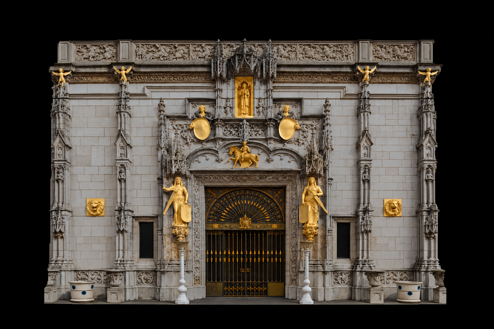

CAL for HCI
Stimulus-Synchronized Gaze Viewer
Canonical façade + stimulus AOIs + participant response on one master stimulus clock.
Loading P03…
Participant
P03
Overlay
Gaze point + trail
Heatmap · current stimulus
Heatmap · last 3 seconds
Stimulus only
Reset surface
Export config

TL
TR
BL
BR
No active stimulus
▶
00:00.0
stimulus
04:19.0
Speed
0.25×
0.5×
1×
2×
4×